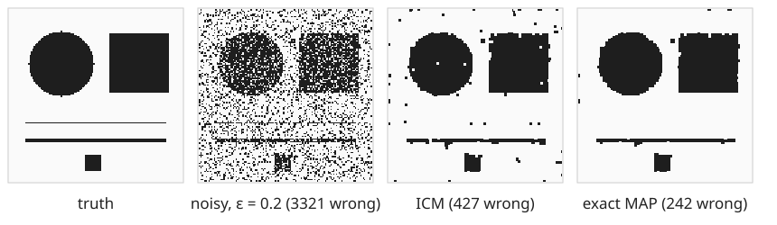
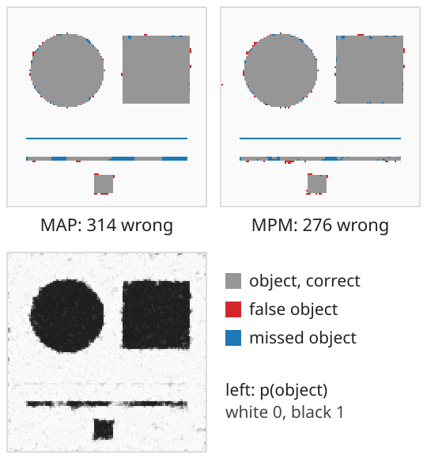
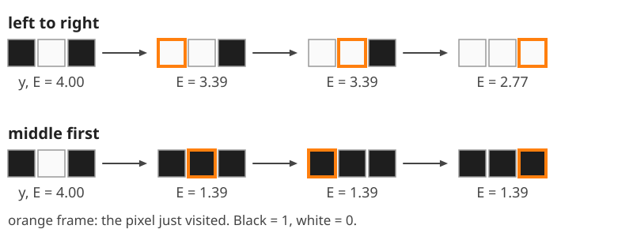
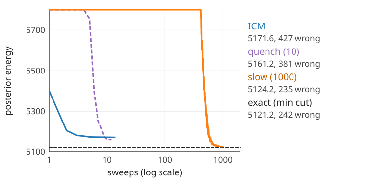
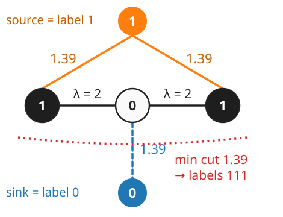
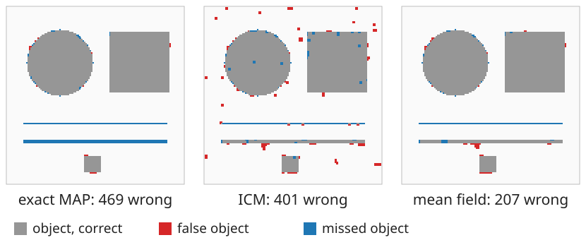
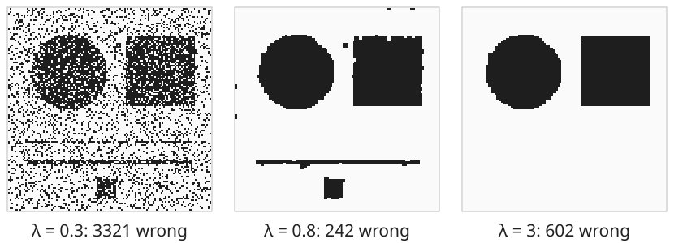

A binary image was corrupted by noise. We want the clean image back, using what we know about noise (the likelihood) and about images (the Ising prior).
Slides titled The math give the formulas and proofs; the ideas are complete without them.

From the thresholding day (the two-class Bayes rule) and the graph-cut day (segmentation as energy minimisation, “the probabilistic view”):
\underbrace{p(\mathbf x \mid \mathbf y)}_{\text{posterior}} \;\propto\; \underbrace{p(\mathbf y \mid \mathbf x)}_{\text{likelihood: the noise}}\;\underbrace{p(\mathbf x)}_{\text{prior: what images look like}}
Labels L_p \in \{0, 1\} (1 = object), as on the graph-cut day:
E(L \mid \mathbf y) = \sum_p D_p(L_p) + \lambda\sum_{(p,q)}[L_p \ne L_q]
Flip noise, independent per pixel: p(y_p \mid x_p) = 1 - \varepsilon if y_p = x_p, else \varepsilon. In spins (x_p, y_p = \pm 1):
\log p(y_p \mid x_p) = \tfrac12\log\big(\varepsilon(1 - \varepsilon)\big) + h\,x_py_p, \qquad h = \tfrac12\log\frac{1 - \varepsilon}{\varepsilon}.
With the Ising prior p(\mathbf x) \propto \exp(J\sum x_px_q) the posterior is again an Ising model, with a pixel-dependent field h_p = h\,y_p:
E(\mathbf x \mid \mathbf y) = -J\sum_{(p,q)}x_px_q - \sum_p h_px_p \;(+\text{ const}), \qquad p(\mathbf x \mid \mathbf y) \propto e^{-E(\mathbf x \mid \mathbf y)}.
In label form (unit 1): D_p(1) - D_p(0) = -2h_p, \lambda = 2J. Gaussian noise with levels \mu_0, \mu_1: D_p(\ell) = (y_p - \mu_\ell)^2/2\sigma_n^2, so h_p = \frac{D_p(0) - D_p(1)}{2} is linear in y_p (the squares y_p^2 cancel). The model’s own temperature is T = 1; a T in an algorithm below is a knob of the algorithm.
\mathbf y = (1, 0, 1), \varepsilon = 0.2 (data cost 1.39 per disagreeing pixel), \lambda = 2:
| labelling | 111 | 000 | 001, 100 | 101 = \mathbf y | 011, 110 | 010 |
|---|---|---|---|---|---|---|
| data | 1.39 | 2.77 | 1.39 | 0 | 2.77 | 4.16 |
| boundaries \times\,\lambda | 0 | 0 | 2 | 4 | 2 | 4 |
| energy | 1.39 | 2.77 | 3.39 | 4.00 | 4.77 | 8.16 |
| probability \propto e^{-E} | 0.60 | 0.15 | 0.08 each | 0.04 | 0.02 each | 0.001 |
The posterior is a distribution over images. Which single image do we report?

For an estimate \hat{\mathbf x} and the unknown truth \mathbf x (distributed as the posterior):
The marginal p(x_p = v \mid \mathbf y) = \sum_{\mathbf x: x_p = v}p(\mathbf x \mid \mathbf y) sums over 2^{n-1} images: no closed form. A Gibbs sampler at T = 1 estimates it as the fraction of samples (after burn-in) with x_p = v.
Iterated conditional modes (Besag, 1986): the Gibbs sampler at T = 0.


The demo’s image at \varepsilon = 0.2, \lambda = 0.8 (presets “ICM”, “quench”, “slow cooling”). Dashed: the exact minimum.
In spin form, keep for each pixel a mean m_p \in [-1, 1] and replace the neighbours in the local field by their means:
m_p \leftarrow \tanh\Big(\frac{J\sum_{q \sim p}m_q + h_p}{T}\Big), \qquad p(x_p = +1) \approx \frac{1 + m_p}{2}.
For binary labels and \lambda \ge 0 this energy is the graph-cut day’s segmentation energy. One max-flow gives its exact minimum (Greig, Porteous & Seheult, 1989; recalled from maximum flow and graph-cut segmentation).


\lambda = 1.6, \varepsilon = 0.2 (demo preset “exact MAP not the best image”).

The exact MAP of the demo’s image (\varepsilon = 0.2) for three values of \lambda.